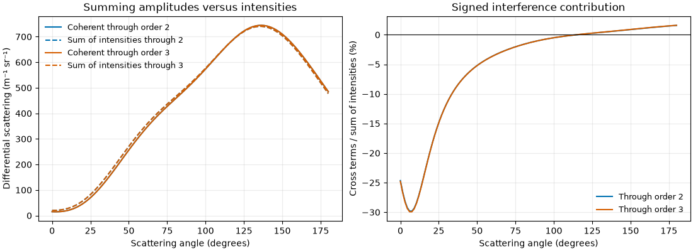
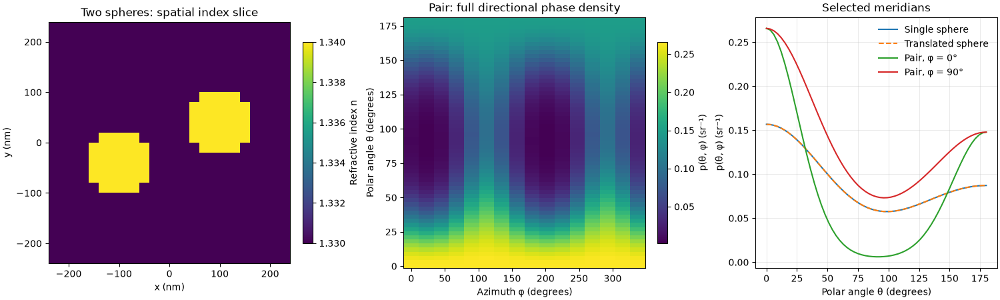
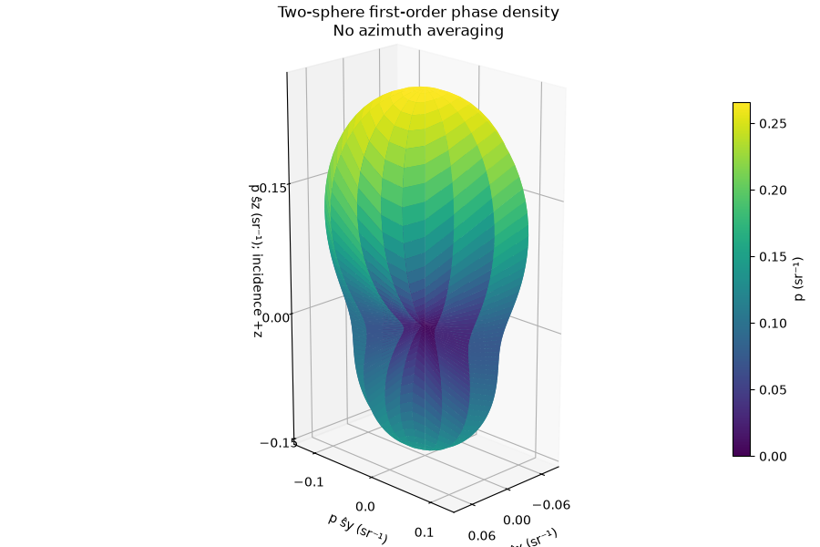
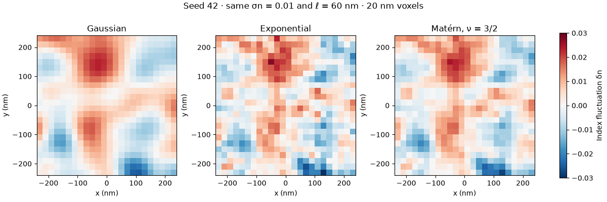
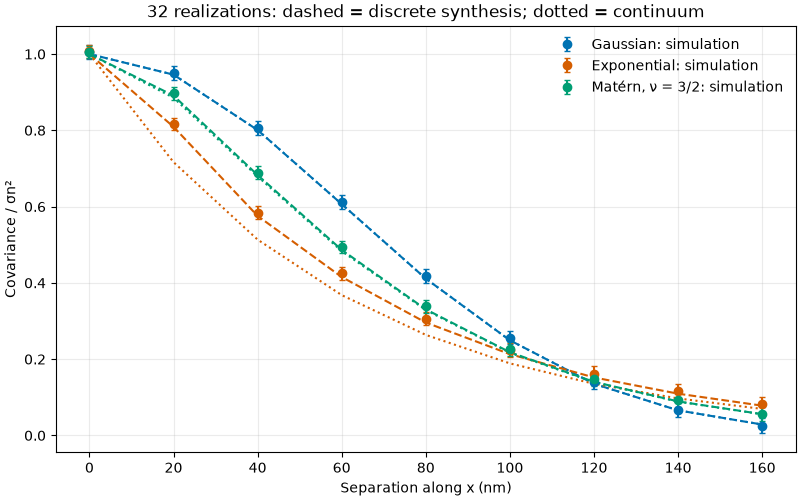
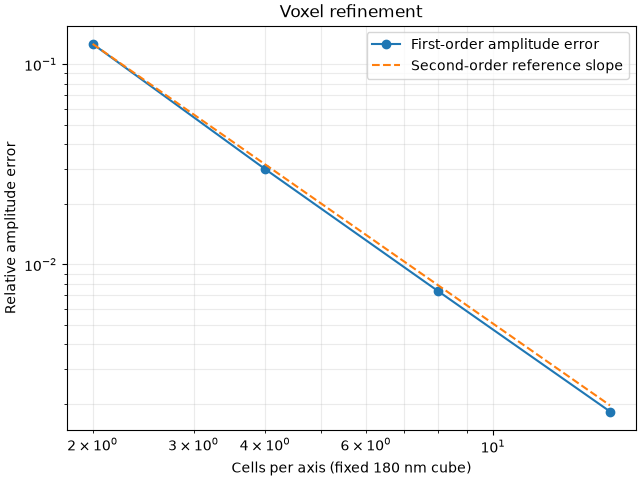

Theory and numerical methods#
BornSim computes vector electromagnetic scattering from a finite refractive-index field in a uniform background. It discretizes a volume integral equation on cubic voxels, using FFT convolution to apply the background Green tensor. It does not use finite elements. The same numerical operator propagates fields in random media, layers and shaped scatterers.
This section connects the physical model to the API and to reproducible simulations. The figures are generated by the documentation examples using BornSim and Matplotlib. Their source code and calculation settings are linked beneath each figure. They illustrate specific effects; quantitative use still requires the relevant refinement checks.
Model, notation and units#
The exterior background has a real, uniform refractive index \(n_0\). A Volume stores the real scalar field
Material objects specify an absolute refractive index, rather than a contrast. StructuredMedium voxelizes the materials; RandomMedium samples a statistical index field. Both produce the same Volume representation.
Symbol |
Meaning and units |
API |
|---|---|---|
\(\lambda_0\) |
Vacuum wavelength, m |
|
\(h\), \(N_a\) |
Cubic voxel width and axis counts |
|
\(n_0\), \(\delta n\) |
Background index and fluctuation, dimensionless |
|
\(M\) |
Highest cumulative Born order |
|
\(D^{[M]}\) |
Differential coefficient, m−1 sr−1 |
|
\(\mathbf f_p^{(m)}\) |
Isolated amplitude of order m, m |
|
\(p^{[M]}\) |
Phase density per solid angle, sr−1 |
|
Bare input lengths mean metres and bare angles mean radians. Compatible quantities are converted to SI. The time convention is \(\exp(-i\omega t)\), with
The constitutive model is deliberately linearized:
The quadratic term \(\delta n^2\) in \((n_0+\delta n)^2\) is omitted at every Born order. More iterations do not restore it. The implementation requires positive linearized permittivity and does not model absorption, magnetic contrast or tensor permittivity. Positive permittivity alone does not establish weak-contrast accuracy.
Geometry and the finite domain#
Grid gives voxel-centre coordinates and the physical box volume:
The box extends half a voxel beyond its outer centres. It specifies the sampled contrast support; it is not an additional material interface. Outside it, the contrast is zero and the background continues indefinitely. A uniform-index inclusion that fills the box nevertheless has an interface where its contrast ends.
For a shape centre \(\mathbf c\) and proper rotation matrix \(R\),
local column coordinates are \(\mathbf u=R^T(\mathbf r-\mathbf c)\).
The implementation uses row vectors, (positions - centre) @ R.
Membership rules are evaluated at voxel centres:
Shape |
Membership |
|---|---|
Layer |
\(b_{\rm lower}\le u_a<b_{\rm upper}\). |
Sphere |
\(\lVert\mathbf u\rVert^2\le R_s^2\). |
Ellipsoid |
\(\sum_a(u_a/A_a)^2\le1\); \(A_a\) are semi-axis radii. |
Box |
\(|u_a|\le L_a/2\) on every axis; \(L_a\) are full lengths. |
Cylinder |
\(|u_a|\le H/2\) and \(\sum_{b\ne a}u_b^2\le R_s^2\). |
Translation changes the centre. Rotation acts about the centre by default; an explicit world-space pivot also rotates the centre. Transforms return new immutable shapes and retain their shared Material.
With overlap="replace", ordered masks \(\mathcal M_j\) apply
Earlier regions win with "preserve"; "error" rejects shared voxel
centres. These are voxel-mask decisions, not continuous intersection tests.
For a random background, \(n^{(0)}=n_0+\delta n_{\rm bg}\); structures
replace that field inside their selected masks. Indices are not added.
Geometry outside the box is clipped, optionally with a warning. Curved interfaces have staircase boundaries, with no subvoxel averaging. Layers have finite lateral extent and edge scattering. The propagation background remains uniform; there is no layered-background Green function or transfer-matrix solver.
From Maxwell’s equation to Born orders#
The vector wave equation in this model is
For \(r>0\), the outgoing background Green tensor is
Define the propagation operator
The volume integral equation is \(\mathbf E=\mathbf E_{\rm inc}+\mathcal K(\chi\mathbf E)\). BornSim computes isolated field terms, followed by cumulative amplitudes:
The incident direction is +z. The transverse x and y polarizations are solved
separately and their intensities receive equal weights. First-order scattering
uses the incident field inside the contrast. Each later amplitude term uses
one additional internal propagation interaction. order=3 retains the
first three amplitude terms; it is neither a mesh-refinement level nor three
independent samples.
First-order Born approximation#
Replace the internal field in the scattering integral by the incident field: \(\mathbf E(\mathbf r')\approx\mathbf E_{\rm inc}(\mathbf r')\). The resulting first-order scattered field is
This retains one scattering interaction. Contributions from different positions still interfere as complex amplitudes. Its accuracy requires the scattered field to perturb the internal illumination only weakly; small index contrast alone is insufficient for a thick sample with appreciable accumulated phase. BornSim uses the linearized contrast in (1) at every order.
Discrete Green interactions and open boundaries#
Off-diagonal voxel interactions use midpoint quadrature, \(k_0^2h^3\mathbf G(\mathbf r_i-\mathbf r_j)\). The singular diagonal uses an equal-volume spherical self cell, with \(a=(3h^3/(4\pi))^{1/3}\):
The final minus one includes the longitudinal contact contribution \(-\mathbf I\delta(\mathbf r)/(3k^2)\). This convention is an approximation to the singular cubic-cell integral, not its exact value. The implementation uses a small-\(ka\) expansion to avoid cancellation.
FFT convolution doubles each grid dimension, zero-pads the source and crops
the result back to the physical box. This applies the finite discrete
convolution without wrap-around electromagnetic interactions. Its padding
has a different purpose from the periodic box used to synthesize random fields.
The implemented kernel is visible in bornsim.green; independent
matrix comparisons are described in Development and releases.
Amplitudes, interference and cross sections#
For observation direction \(\hat{\mathbf s}\), the isolated order-m far-field amplitude of polarization p is
The transverse projector removes the far-field longitudinal component. Amplitudes have units of metres. The cumulative differential cross section is
For two amplitude terms, the cross term is \(2\operatorname{Re}(\mathbf f^{(1)*}\cdot\mathbf f^{(2)})\). It can have either sign. Summing isolated intensities therefore cannot reconstruct the coherent cumulative intensity. Interference occurs within each incident polarization; the two incident polarizations are averaged incoherently.


Numerical Born terms for one seeded finite volume. The signed difference between coherent scattering and the sum of isolated intensities displays the interference contribution. Simulation code.#
Result stores \(D^{[M]}\) in m−1 sr−1.
result.differential_cross_section multiplies it by the stored physical box
volume to recover m2 sr−1. The volume includes background
voxels. These finite-sample coefficients are not automatically intrinsic
infinite-medium transport coefficients.
First-order structure and directional asymmetry#
At first order, the amplitude samples the spatial Fourier transform of the contrast at the scattering wavevector
Translating a completely contained scatterer by \(\mathbf d\) multiplies this amplitude by \(e^{-i\mathbf q\cdot\mathbf d}\), whose modulus is one. Intensity is unchanged. On a voxel grid, integer-voxel translations preserve the mask exactly; arbitrary shifts can change voxelization.
For two identical, nonoverlapping copies separated by \(\mathbf d\), the first-order intensity acquires the factor
Transverse separation introduces azimuth dependence. Thus a translated single sphere can have the same intensity as a centred sphere, while a pair generally has a directionally asymmetric pattern. This simple factor describes first order; higher orders also include interactions between particles.


First-order numerical simulations at 633 nm vacuum wavelength, with 20 nm voxels and index 1.34 in a 1.33 background. Integer-voxel translation leaves the single-sphere curve unchanged, while two spheres produce different meridians. The simulation asserts translation invariance. Simulation code.#


The pair’s full phase-density surface retains every sampled azimuth. Its radius is a density in direction space, not a position in the medium.#
Solid-angle normalization and angular sampling#
Directions are \(\hat{\mathbf s}=(\sin\theta\cos\phi, \sin\theta\sin\phi,\cos\theta)\), with \(d\Omega=\sin\theta\,d\theta\,d\phi\). For each cumulative Born order,
When \(\mu_s>0\), the phase function is \(p=D/\mu_s\), with \(\int_{4\pi}p\,d\Omega=1\). It is a density per steradian, not per polar angle. At zero scattering, phase normalization is undefined and anisotropy is NaN; the reduced coefficient is zero, using the zero-scattering limit of the moment integral.
AngularSampling separates output angles from integration accuracy. If \(u=\cos\theta\), Gauss–Legendre nodes \(u_i\) and weights \(w_i\) combine with uniform azimuths \(\phi_j=2\pi j/N_\phi\):
angles selects output polar angles; polar_samples selects quadrature
nodes; azimuth_samples sets both output and integration azimuths. Increasing
output angles alone does not refine the solid-angle integral.
Full results retain (order, polar angle, azimuth) data. No azimuth average
is implicit. result.meridian(azimuth=...) selects a sampled angle exactly,
or explicitly the nearest sample, without interpolation. It retains the
full solve’s normalization. result.azimuth_average() instead computes
The same operation on phase densities retains their full normalization.
For an axisymmetric distribution only, the polar-angle density is
\(2\pi p(\theta)\sin\theta\). For a general distribution it is
\(\sin\theta\int_0^{2\pi}p(\theta,\phi)\,d\phi\).
A single meridian is insufficient to infer that marginal or \(\mu_s\).
Consequently solve_cut does not infer integrated coefficients from a cut.
Random fields and Whittle–Matérn covariance#
RandomMedium describes a stationary isotropic Gaussian probability field with ensemble mean zero and point variance \(\sigma_n^2\). The covariance describes spatial correlations: \(C_n(r)=\langle\delta n(\mathbf x)\delta n(\mathbf x+\mathbf r)\rangle\). Choosing exponential or Matérn covariance does not change the Gaussian one-point probability distribution.
BornSim’s length and smoothness convention is
Here \(C_n(0)=\sigma_n^2\), \(\nu>0\) and \(K_\nu\) is the modified Bessel function. Exponential covariance is Matérn with \(\nu=1/2\). For \(\nu=3/2\), \(C_n(r)/\sigma_n^2=(1+\sqrt3r/\ell)e^{-\sqrt3r/\ell}\). Equal length parameters do not make the different covariance models identical.
With \(\Phi_n(\mathbf q)=\int C_n(\mathbf r)e^{-i\mathbf q\cdot\mathbf r}d^3r\), the dimensionless spectral shapes used for synthesis are
Synthesis uses a periodic box of shape \((2N_x,2N_y,2N_z)\) at spacing h, then retains the first half of each axis. For independent standard normal samples \(\xi\), NumPy FFT normalization gives
Normalization sets the expected point variance. Each realization’s spatial mean and variance fluctuate; samples are not recentered or rescaled and the DC mode is retained. The expected discrete normalized covariance is \(\operatorname{IFFT}(w/\overline w)\). Spectral truncation and finite box size change its relationship to the continuum covariance.


Seeded numerical index slices at equal standard deviation and length parameter. Covariance changes spatial texture, not the Gaussian probability law. Simulation code.#


Covariance estimates from 32 independent realizations. Error bars describe uncertainty across realizations. Dashed curves predict discrete synthesis; dotted curves show the continuum convention. Samples are not demeaned. Differences from continuum curves can persist beyond sampling uncertainty.#
At first order, random-field covariance connects to scattering through the Fourier transform of the finite windowed field. For a sample window W,
The finite window matters even after averaging many realizations. Changing the box size and changing the number of samples therefore address different errors. The existing AnalyticalMedium path describes infinite-medium first-order Gaussian or exponential models; it is distinct from these finite simulations. This section introduces no additional analytical solver.
Ensembles and uncertainty#
A fixed structure or a single realized random volume uses solve. An ensemble
uses independent random fields or random backgrounds generated from the ordered
seeds in EnsembleSampling. Duplicate seeds are rejected because repeated fields
do not provide independent sampling uncertainty.
For R independent realization intensities \(D_r\),
The amplitudes interfere coherently within each realization. The ensemble then averages intensities, never random amplitudes. For one realization, error is unknown and reported as NaN. Integrated ensemble anisotropy is the ratio of averaged angular moments, not an average of per-realization ratios.
Azimuth averaging introduces correlated angular samples. BornSim computes each realization’s azimuth average before estimating its standard error:
Averaging directional error bars or treating directions as independent would omit those covariances. Phase plots do not infer uncertainty in the ratio \(D/\mu_s\) from intensity errors alone; its uncertainty also involves numerator–denominator covariance.
Resolution, convergence and interpretation#
The Born expansion is a Neumann series for \(\mathcal A=\mathcal K\chi\). For a fixed finite discrete matrix, spectral radius \(\rho(\mathcal A)<1\) is sufficient for convergence. Decreasing observed field norms over a few orders does not establish universal convergence or discretization accuracy.
Keep the following checks separate:
Check |
Hold fixed |
Assess |
|---|---|---|
Reduce voxel spacing |
Physical geometry and contrast |
Interfaces, midpoint quadrature and Green discretization |
Increase angular quadrature |
Same Volume or exact seed list |
Solid-angle integrals and directional resolution |
Increase realization count |
Grid and medium statistics |
Sampling uncertainty |
Increase physical sample size |
Voxel spacing and statistics |
Finite-window and synthesis-box effects |
Increase Born order |
Volume and sampling |
Sensitivity to additional interaction terms |


Refinement at fixed 180 nm cube size, compared with an independent exact first-order volume integral. This checks midpoint amplitude quadrature; it does not validate higher-order Green self interactions. Simulation code.#
Sampling-error bars exclude geometry, constitutive, quadrature and finite-size bias. For reproducible calculations, retain Grid, AngularSampling, Material, medium settings, EnsembleSampling and software versions. Results are immutable; archives retain their physical sample volume, arrays and provenance, but do not store the original voxel field. See Python API for interfaces and Examples for runnable refinement and uncertainty studies.
Further reading#
For the connection between index covariance spectra and vector first-order random-medium scattering, see Rogers, Çapoğlu and Backman (2009), Nonscalar elastic light scattering from continuous media in the Born approximation. Compare length parameters, polarization and Fourier normalizations before transferring formulas between conventions. The finite-grid Green self cell, synthesis normalization and higher Born orders documented here describe BornSim’s implementation; the simulations and independent numerical tests provide the corresponding checks.